Manchester United
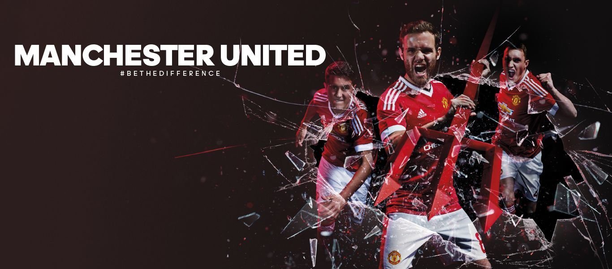
Early Years
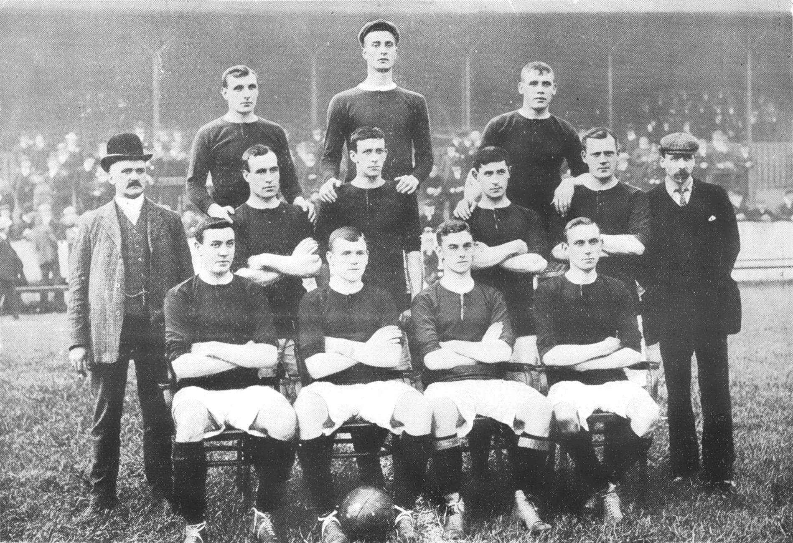
Manchester United was formed in 1878 as Newton Heath LYR Football Club by the Carriage and Wagon department of the Lancashire and Yorkshire Railway (LYR) depot at Newton Heath. By 1888, the club had become a founding member of The Combination, a regional football league. Following the league's dissolution after only one season, Newton Heath joined the newly formed Football Alliance, which ran for three seasons before being merged with the Football League. This resulted in the club starting the 1892–93 season in the First Division, by which time it had become independent of the railway company and dropped the "LYR" from its name. After two seasons, the club was relegated to the Second Division. On 24 April 1902, Manchester United was officially born. Under Ernest Mangnall, who assumed managerial duties in 1903, the team finished as Second Division runners-up in 1906 and secured promotion to the First Division, which they won in 1908 – the club's first league title. The following season began with victory in the first ever Charity Shield and ended with the club's first FA Cup title. Manchester United won the First Division for the second time in 1911, but at the end of the following season, Mangnall left the club to join Manchester City. In 1922, three years after the resumption of football following the First World War, the club was relegated to the Second Division, where it remained until regaining promotion in 1925. Relegated again in 1931, Manchester United became a yo-yo club, achieving its all-time lowest position of 20th place in the Second Division in 1934. In the 1938–39 season, the last year of football before the Second World War, the club finished 14th in the First Division.
Busby Years
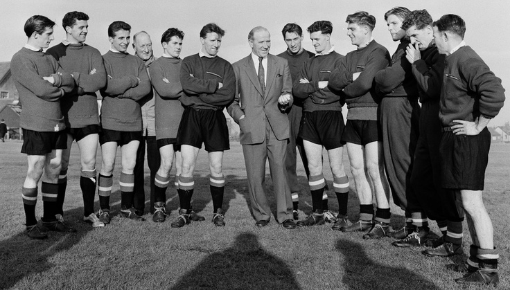
In October 1945, the impending resumption of football led to the managerial appointment of Matt Busby, who demanded an unprecedented level of control over team selection, player transfers and training sessions. Busby led the team to second-place league finishes in 1947, 1948 and 1949, and to FA Cup victory in 1948. In 1952, the club won the First Division, its first league title for 41 years. With an average age of 22, the back-to-back title winning side of 1956 were labelled "the Busby Babes" by the media, a testament to Busby's faith in his youth players. In 1957, Manchester United became the first English team to compete in the European Cup, despite objections from The Football League, who had denied Chelsea the same opportunity the previous season. En route to the semi-final, which they lost to Real Madrid, the team recorded a 10–0 victory over Belgian champions Anderlecht, which remains the club's biggest victory on record.The following season, on the way home from a European Cup quarter-final victory against Red Star Belgrade, the aircraft carrying the Manchester United players, officials and journalists crashed while attempting to take off after refuelling in Munich, Germany.
1969–1986
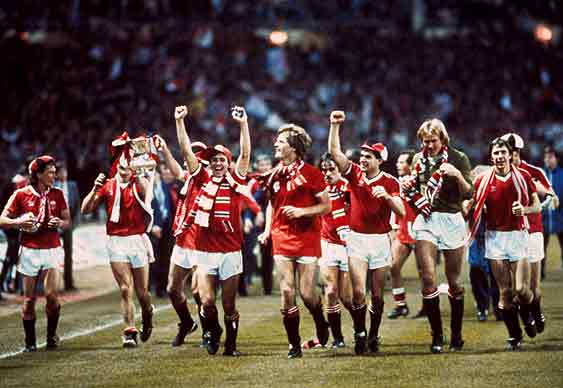
Following an eighth-place finish in the 1969–70 season and a poor start to the 1970–71 season, Busby was persuaded to temporarily resume managerial duties, and McGuinness returned to his position as reserve team coach. In June 1971, Frank O'Farrell was appointed as manager, but lasted less than 18 months before being replaced by Tommy Docherty in December 1972. Docherty saved Manchester United from relegation that season, only to see them relegated in 1974; by that time the trio of Best, Law, and Charlton had left the club.The team won promotion at the first attempt and reached the FA Cup final in 1976, but were beaten by Southampton. They reached the final again in 1977, beating Liverpool 2–1. Docherty was dismissed shortly afterwards, following the revelation of his affair with the club physiotherapist's wife. Dave Sexton replaced Docherty as manager in the summer of 1977. Despite major signings, including Joe Jordan, Gordon McQueen, Gary Bailey, and Ray Wilkins, the team failed to achieve any significant results; they finished in the top two in 1979–80 and lost to Arsenal in the 1979 FA Cup Final. Sexton was dismissed in 1981, even though the team won the last seven games under his direction. He was replaced by Ron Atkinson, who immediately broke the British record transfer fee to sign Bryan Robson from West Bromwich Albion. Under Atkinson, Manchester United won the FA Cup twice in three years – in 1983 and 1985. In 1985–86, after 13 wins and two draws in its first 15 matches, the club was favourite to win the league, but finished in fourth place. The following season, with the club in danger of relegation by November, Atkinson was dismissed.
Ferguson years (1986–2013)
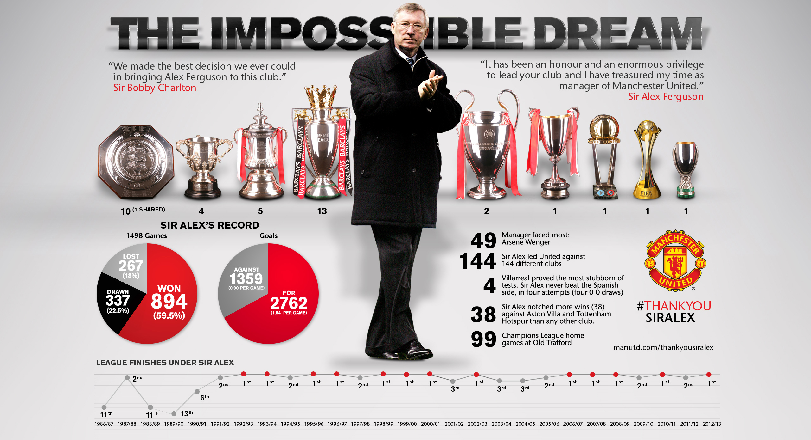
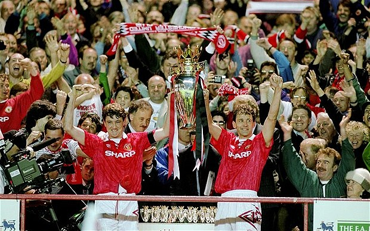
(1986–2013) covers the period following the appointment of Alex Ferguson in November 1986, to the day of his retirement, in May 2013. Ferguson joined the club from Aberdeen on the same day that Ron Atkinson was dismissed, and guided the club to a 12th-place finish in the league. Despite a second-place finish in 1987–88, the club was back in 11th place the following season. Reportedly on the verge of being dismissed, victory over Crystal Palace in the 1990 FA Cup Final replay (after a 3–3 draw) saved Ferguson's career. The following season, Manchester United claimed its first Cup Winners' Cup title and competed in the 1991 UEFA Super Cup, beating European Cup holders Red Star Belgrade 1–0 in the final at Old Trafford. A second consecutive League Cup final appearance followed in 1992, in which the team beat Nottingham Forest 1–0 at Wembley Stadium. In 1993, the club won its first league title since 1967, and a year later, for the first time since 1957, it won a second consecutive title – alongside the FA Cup – to complete the first "Double" in the club's history.
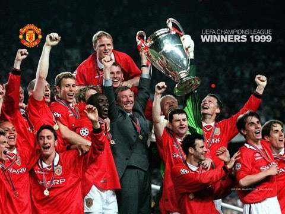
The 1998–99 season was the most successful in the history of Manchester United. United won the Premier League, the FA Cup and the UEFA Champions League, becoming the first English club to achieve the feat of winning the domestic league and cup as well as the European Cup in the same season. After a 3–2 home defeat against Middlesbrough in the league on 19 December 1998, United went undefeated for the rest of the season for a run of 33 matches in all competitions. It was during this season that United gained a reputation for not conceding defeat even in what seemed the most hopeless of circumstances, winning and drawing several matches with late goals after falling behind early on. Some of their more notable come-backs were the FA Cup Fourth Round tie at home to Liverpool, which Liverpool led from the third to the 85th minute, both legs of the UEFA Champions League semi-finals against Juventus and the FA Cup semi-final against Arsenal, won by a Ryan Giggs goal deep into extra time, forced by a last-gasp Peter Schmeichel penalty save in the last of his eight seasons at the club. However, the most dramatic comeback came in the Champions League final against Bayern Munich, when Teddy Sheringham and Ole Gunnar Solskjær scored a goal each in stoppage time to give United a 2–1 win in stoppage time – a sixth-minute goal from Bayern's Mario Basler looked to have won the trophy for the Germans, who still had the lead with 90 minutes showing on the clock. United lost just five times in the entire season; three times in the league, as well as in the Charity Shield at the start of the season, and their League Cup quarter-final, in which they were defeated by eventual winners, Tottenham Hotspur. They defeated every other Premier League team at least once in all competitions and were undefeated in the Champions League.
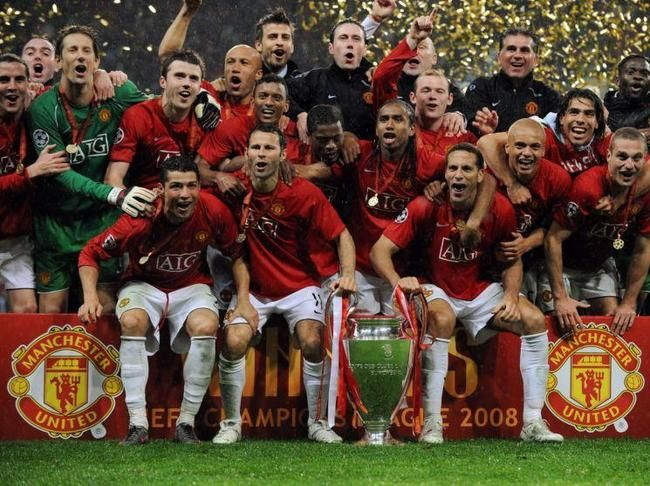
In 2000, Manchester United competed in the inaugural FIFA Club World Championship in Brazil, and won the league again in the 1999–2000 and 2000–01 seasons. The team finished third in 2001–02, before regaining the title in 2002–03. They won the 2003–04 FA Cup, beating Millwall 3–0 in the final at the Millennium Stadium in Cardiff. In the 2005–06 season, Manchester United failed to qualify for the knockout phase of the UEFA Champions League for the first time in over a decade, but recovered to secure a second-place league finish and victory over Wigan Athletic in the 2006 Football League Cup Final. The club regained the Premier League title in the 2006–07 and 2007–08 seasons, and completed the European double by beating Chelsea 6–5 on penalties in the 2008 UEFA Champions League Final in Moscow's Luzhniki Stadium. Ryan Giggs made a record 759th appearance for the club in this game, overtaking previous record holder, Bobby Charlton. In December 2008, the club won the 2008 FIFA Club World Cup and followed this with the 2008–09 Football League Cup, and a third successive Premier League title, the first time any team had won three successive league titles more than once. That summer, Cristiano Ronaldo was sold to Real Madrid for a world record £80 million.In 2010, Manchester United defeated Aston Villa 2–1 at Wembley to retain the League Cup, their first successful defence of a knockout cup competition
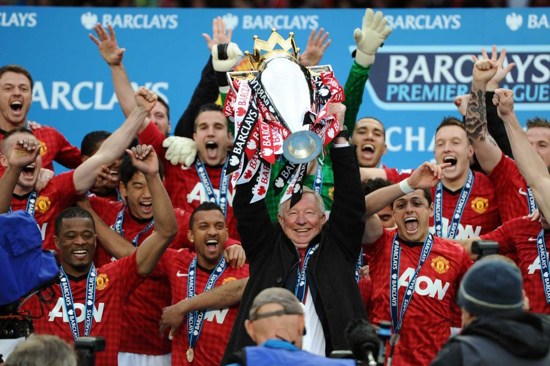
In December 2008, the club beat LDU Quito in the final of the 2008 FIFA Club World Cup in Japan, becoming the first English team to win the competition. That season, Manchester United broke both the English and European league records for the most time played without conceding a goal and on 1 March, in the 2009 League Cup Final, the club beat Tottenham 4–1 on penalties. On 16 May, United secured their 11th Premier League title – and 18th league title overall (equalling the record held by Liverpool) – following a 0–0 draw at home to Arsenal. This was the second time the club had won three consecutive Premier League titles, but Manchester United was beaten 2–0 by Barcelona in the final in Rome on 27 May. In the following summer transfer window, Cristiano Ronaldo was sold to Real Madrid for a world record £80 million and Carlos Tevez joined local rivals Manchester City, after his loan spell came to an end. On 28 February 2010, Manchester United defeated Aston Villa 2–1 at Wembley Stadium to retain the League Cup, the first time the club had successfully defended a knockout cup competition. However, they were knocked out of the Champions League in the quarter-finals by Bayern Munich on away goals, and were runners-up in the Premier League, finishing one point behind Chelsea. During the summer, they signed an almost unknown Javier Hernandez from Guadalajara. On 8 August 2010, Manchester United defeated Chelsea 3–1 to win the FA Community Shield. The 2010–11 campaign was a successful one, with Manchester United overhauling early leaders Chelsea and securing a record 19th league title with a 1–1 away draw against Blackburn on 14 May 2011. They faced Barcelona again in the 2011 UEFA Champions League Final, but were defeated again 3–1. However, they were beaten in the semi-finals of the FA Cup by Manchester City, who were now the wealthiest club in England and competing seriously with the English league's leading lights for the first time since the 1970s. In the 2011–12 season, Manchester United were knocked out of the League Cup by Football League Championship side Crystal Palace in the fifth round. Just over a week later, they were knocked out of the Champions League in the group stages after a shock defeat by Basel, sending them to the UEFA Europa League for the first time. In January, Manchester United were also knocked out of the FA Cup in the fourth round by Liverpool. They lost their league title in dramatic fashion on the last day, to Manchester City. With 90 minutes showing, United's victory at Sunderland looked to have given them the title by a three-point margin as City trailed 2–1 to a QPR side managed by former United player Mark Hughes. However, two stoppage time goals saw City snatch the title on goal difference. Seven months earlier, City had crushed United 6–1 at Old Trafford in one of the club's heaviest home defeats in its history. Although, in August, United beat Arsenal 8-2 at Old Trafford, marking one of Ferguson's biggest wins against a champion of the Premier League. In the 2012–13 season, Manchester United were knocked out of the League Cup by Chelsea in the Fifth Round. They were knocked out of the UEFA Champions League at the last 16 stage by Real Madrid 2–3 on aggregate. United were knocked out in the Sixth Round of the FA Cup by Chelsea. But overall the 2012–13 campaign was a successful one for United as they ran away with a record 20th league title, sealing it with a home win against Aston Villa on 22 April 2013. The key factor in United's success was top scorer Robin van Persie, a £25 million close-season signing from Arsenal. The Dutch forward was instrumental throughout the season and he fittingly scored all of United's goals as they won their title-clinching game 3–0. In May 2013, just before the end of the Premier League season, Ferguson announced his retirement as manager of Manchester United after 27 years, with David Moyes of Everton being announced as his successor the next day. Ferguson remains as a director and ambassador for the club. On 19 May 2013, Ferguson managed Manchester United for the last time in a 5–5 draw at West Bromwich Albion, who had competed alongside them in the early stages of the title race before fading to finish eighth.
2013–present
On 8 May 2013, Ferguson announced that he was to retire as manager at the end of the football season, but would remain at the club as a director and club ambassador. The club announced the next day that Everton manager David Moyes would replace him from 1 July, having signed a six-year contract. Ryan Giggs took over as interim player-manager 10 months later, on 22 April 2014, when Moyes was sacked after a poor season in which the club failed to defend their Premier League title and failed to qualify for the UEFA Champions League for the first time since 1995–96. They also failed to qualify for the Europa League, meaning that it was the first time Manchester United hadn't qualified for a European competition since 1990. On 19 May 2014, it was confirmed that Louis van Gaal would replace Moyes as Manchester United manager on a three-year deal, with Giggs as his assistant. Malcolm Glazer, the patriarch of the Glazer family that owns the club, died on 28 May 2014. Although Van Gaal's first season saw United once again qualify for the Champions League through a fourth-place finish in the Premier League, his second season saw United go out of the same tournament in the group stage. United also fell behind in the title race for the third consecutive season, finishing in 5th place, in spite of several expensive signings during Van Gaal's tenure. However, that same season, Manchester United won the FA Cup for a 12th time. Despite this victory, Van Gaal was sacked as manager just two days later, with José Mourinho appointed in his place on 27 May, signing a three-year contract.
Old Trafford
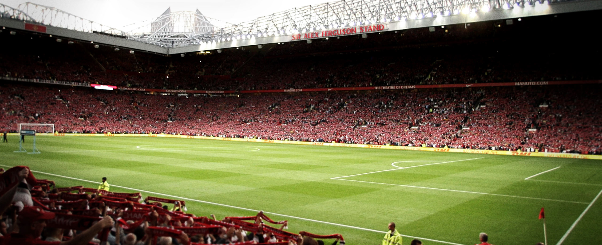
Old Trafford is a football stadium in Old Trafford, Greater Manchester, England, and the home of Manchester United. With a capacity of 75,643, it is the largest club stadium of any football team in the United Kingdom, the third-largest stadium and the second-largest football stadium in the United Kingdom, and the eleventh-largest in Europe. It is about 0.5 miles (800 m) from Old Trafford Cricket Ground and the adjacent tram stop. Nicknamed "The Theatre of Dreams" by Bobby Charlton, Old Trafford has been United's home ground since 1910, although from 1941 to 1949 the club shared Maine Road with local rivals Manchester City as a result of Second World War bomb damage. Old Trafford underwent several expansions in the 1990s, and 2000s, including the addition of extra tiers to the North, West and East Stands, almost returning the stadium to its original capacity of 80,000. Future expansion is likely to involve the addition of a second tier to the South Stand, which would raise the capacity to around 95,000. The stadium's record attendance was recorded in 1939, when 76,962 spectators watched the FA Cup semi-final between Wolverhampton Wanderers and Grimsby Town. Old Trafford has hosted FA Cup semi-finals, England fixtures, matches at the 1966 World Cup and Euro 96 and the 2003 Champions League Final, as well as rugby league's annual Super League Grand Final and the final of two Rugby League World Cups. It also hosted football matches at the 2012 Summer Olympics, including women's international football for the first time in its history.Before 1902, Manchester United were known as Newton Heath, during which time they first played their football matches at North Road and then Bank Street in Clayton. However, both grounds were blighted by wretched conditions, the pitches ranging from gravel to marsh, while Bank Street suffered from clouds of fumes from its neighbouring factories. Therefore, following the club's rescue from near-bankruptcy and renaming, the new chairman John Henry Davies decided in 1909 that the Bank Street ground was not fit for a team that had recently won the First Division and FA Cup, so he donated funds for the construction of a new stadium. Not one to spend money frivolously, Davies scouted around Manchester for an appropriate site, before settling on a patch of land adjacent to the Bridgewater Canal, just off the north end of the Warwick Road in Old Trafford. With every subsequent improvement made to the ground since the Second World War, the capacity steadily declined. By the 1980s, the capacity had dropped from the original 80,000 to approximately 60,000. The capacity dropped still further in 1990, when the Taylor Report recommended, and the government demanded that all First and Second Division stadia be converted to all-seaters. This meant that £3–5 million plans to replace the Stretford End with a brand new stand with an all-standing terrace at the front and a cantilever roof to link with the rest of the ground had to be drastically altered. This forced redevelopment, including the removal of the terraces at the front of the other three stands, not only increased the cost to around £10 million, but also reduced the capacity of Old Trafford to an all-time low of around 44,000. In addition, the club was told in 1992 that they would only receive £1.4 million of a possible £2 million from the Football Trust to be put towards work related to the Taylor Report.
The Old Trafford pitch is surrounded by four covered all-seater stands, officially known as the Sir Alex Ferguson (North), East, Sir Bobby Charlton (South) and West Stands. Each stand has at least two tiers, with the exception of the Sir Bobby Charlton Stand, which only has one tier due to construction restrictions. The lower tier of each stand is split into Lower and Upper sections, the Lower sections having been converted from terracing in the early 1990s.
Sir Alex Ferguson Stand
The Sir Alex Ferguson Stand, formerly known as the United Road stand and the North Stand, runs over the top of United Road. The stand is three tiers tall, and can hold about 26,000 spectators, the most of the four stands. It can also accommodate a few fans in executive boxes and hospitality suites. As the ground's main stand, it houses many of the ground's more popular facilities, including the Red Café (a Manchester United theme restaurant/bar) and the Manchester United museum and trophy room. Originally opened in 1986 as the first of its kind in the world, the Manchester United museum was in the south-east corner of the ground until it moved to the redeveloped North Stand in 1998. The museum was opened by Pelé on 11 April 1998, since when numbers of visitors have jumped from 192,000 in 1998 to more than 300,000 visitors in 2009. The North Stand was renamed as the Sir Alex Ferguson Stand on 5 November 2011, in honour of Alex Ferguson's 25 years as manager of the club.
Sir Bobby Charlton Stand
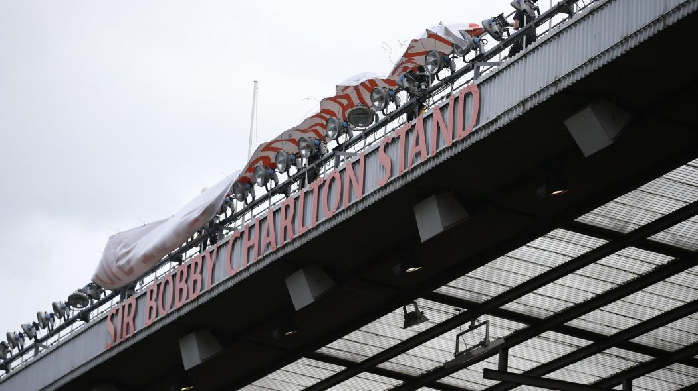
Opposite the Sir Alex Ferguson Stand is the Sir Bobby Charlton Stand, formerly Old Trafford's main stand and previously known as the South Stand. Although only a single-tiered stand, the Sir Bobby Charlton Stand contains most of the ground's executive suites, and also plays host to any VIPs who may come to watch the match. Members of the media are seated in the middle of the Upper South Stand to give them the best view of the match. The television gantry is also in the Sir Bobby Charlton Stand, so the Sir Bobby Charlton Stand is the one that gets shown on television least often. Television studios are located at either end of the Sir Bobby Charlton Stand, with the club's in-house television station, MUTV, in the East studio and other television stations, such as the BBC and Sky, in the West studio. The dugout is in the centre of the Sir Bobby Charlton Stand, raised above pitch level to give the manager and his coaches an elevated view of the game. Each team's dugout flanks the old players' tunnel, which was used until 1993. The old tunnel is the only remaining part of the original 1910 stadium, having survived the bombing that destroyed much of the stadium during the Second World War. On 6 February 2008, the tunnel was renamed the Munich Tunnel, as a memorial for the 50th anniversary of the 1958 Munich air disaster. The current tunnel is in the South-West corner of the ground, and doubles as an entrance for the emergency services. In the event that large vehicles require access, the seating above the tunnel can be raised by up to 25 feet (7.6 m). The tunnel leads up to the players' dressing room, via the television interview area, and the players' lounge. On 3 April 2016, the South Stand was renamed the Sir Bobby Charlton Stand before kick-off of the Premier League home match against Everton, in honour of Manchester United legend Sir Bobby Charlton who made his Manchester United debut 60 years ago
Munich Tragedy
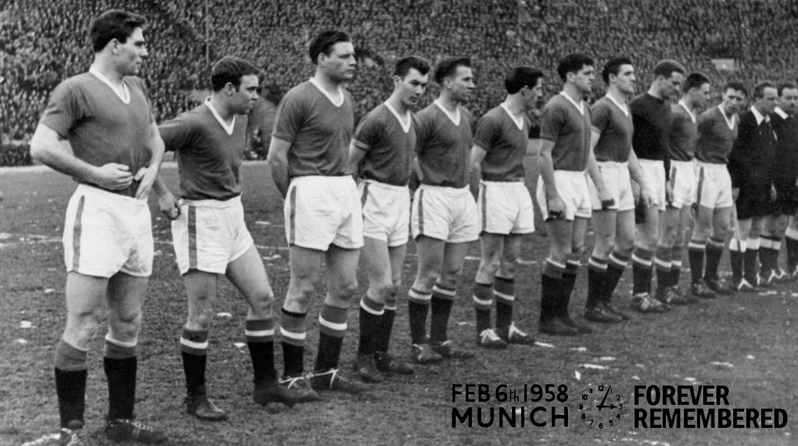
The Munich air disaster occurred on 6 February 1958 when British European Airways flight 609 crashed on its third attempt to take off from a slush-covered runway at Munich-Riem Airport, West Germany. On the plane was the Manchester United football team, nicknamed the "Busby Babes", along with supporters and journalists. Twenty of the 44 on the aircraft died at the scene. The injured, some unconscious, were taken to the Rechts der Isar Hospital in Munich where three more died, resulting in 23 fatalities with 21 survivors. The team was returning from a European Cup match in Belgrade, Yugoslavia, against Red Star Belgrade. The flight stopped to refuel in Munich because a non-stop flight from Belgrade to Manchester was beyond the "Elizabethan"-class Airspeed Ambassador's range. After refuelling, pilots James Thain and Kenneth Rayment twice abandoned take-off because of boost surging in the left engine. Fearing they would get too far behind schedule, Captain Thain rejected an overnight stay in Munich in favour of a third take-off attempt. By then, snow was falling, causing a layer of slush to form at the end of the runway. After the aircraft hit the slush, it ploughed through a fence beyond the end of the runway and the left wing was torn off after hitting a house. Fearing the aircraft might explode, Thain began evacuating passengers while Manchester United goalkeeper Harry Gregg helped pull survivors from the wreckage. Manchester United were trying to become the third club to win three successive English league titles; they were six points behind League leaders Wolverhampton Wanderers with 14 games to go. They also held the Charity Shield and had just advanced into their second successive European Cup semi-final. The team had not been beaten for 11 matches. The crash not only derailed their title ambitions that year but also virtually destroyed the nucleus of what promised to be one of the greatest generations of players in English football history. It took 10 years for the club to recover, with Busby rebuilding the team and winning the European Cup in 1968 with a new generation of "Babes".
In April 1955, UEFA established the European Cup, a football competition for the champion clubs of UEFA-affiliated nations, to begin in the 1955–56 season. However, the English league winners, Chelsea, were denied entry by the Football League's secretary, Alan Hardaker, who believed not participating was best for English football. The following season, the English league was won by Manchester United, managed by Matt Busby. The Football League again denied their champions entry, but Busby and his chairman, Harold Hardman, with the help of the Football Association's chairman Stanley Rous, defied the league and United became the first English team to play in Europe. The team – known as the "Busby Babes" for their youth – reached the semi-finals, beaten there by the eventual winners, Real Madrid. Winning the First Division title again that season meant qualification for the 1957–58 tournament, and their cup run in 1956–57 meant they were one of the favourites to win. Domestic league matches were on Saturdays and European matches midweek, so, although air travel was risky, it was the only choice if United were to fulfil their league fixtures, which they would have to do if they were to avoid proving Alan Hardaker right
20 people, including seven of Manchester United's players, died at the scene of the crash. The 21st victim, Frank Swift, the journalist and former Manchester City goalkeeper, died on his way to hospital. Duncan Edwards died from his injuries on 21 February at the Rechts der Isar Hospital in Munich, and the final death toll reached 23 several days later when co-pilot Ken Rayment died as a result of serious head injuries. Johnny Berry and Jackie Blanchflower were both injured so severely that they never played again. Matt Busby was seriously injured and had to stay in hospital for more than two months after the crash, and was read his Last Rites twice. After being discharged from hospital, he went to Switzerland to recuperate in Interlaken. At times, he felt like giving up football entirely, until he was told by his wife, Jean, "You know Matt, the lads would have wanted you to carry on." That statement lifted Busby from his depression, and he returned by land to Manchester, before watching his team play in the 1958 FA Cup Final. Meanwhile, there was speculation that the club would fold, but a threadbare United team completed the 1957–58 season, with Busby's assistant Jimmy Murphy standing in as manager; he had not travelled to Belgrade as he was in Cardiff managing the Welsh national team at the time. A team largely made up of reserve and youth team players beat Sheffield Wednesday 3–0 in the first match after the disaster. The programme for that match showed simply a blank space where each United player's name should have been. With seven players dead (Duncan Edwards died just over 24 hours later), and with only Harry Gregg and Bill Foulkes fit to play out of the surviving players, United were desperate to find replacements with experience, so Murphy signed Ernie Taylor from Blackpool and Stan Crowther from Aston Villa. Three players, Derek Lewin, Bob Hardisty and Warren Bradley, were transferred to United on short-term contracts by non-League club Bishop Auckland. Bradley was the only one of the three players to play for the first team, and the only one to sign a permanent contract. The remaining places in the team were filled by reserve players including Shay Brennan and Mark Pearson. There were changes in the backroom staff at the club too, following the deaths of secretary Walter Crickmer and coaches Tom Curry and Bert Whalley. United goalkeeper Les Olive, still registered as a player at the time of the disaster, retired from playing and took over from Crickmer as club secretary, while another former United goalkeeper, Jack Crompton, took over coaching duties after United chairman Harold Hardman had negotiated with Crompton's then-employers Luton Town for his release. United only won one league game after the crash, causing their title challenge to collapse and they fell to ninth place in the league. They did manage to reach the final of the FA Cup, however, losing 2–0 to Bolton Wanderers, and even managed to beat Milan at Old Trafford in the semi-finals of the European Cup, only to lose 4–0 at the San Siro.Real Madrid, who went on to win the trophy for the third year running, suggested that Manchester United be awarded the trophy for that year – a suggestion supported by Red Star Belgrade – but this failed to materialise. Busby resumed managerial duties the next season (1958–59), and eventually built a second generation of Busby Babes, including George Best and Denis Law, that ten years later won the European Cup, beating Benfica. Bobby Charlton and Bill Foulkes were the only two crash survivors who lined up in that team. A fund for dependents of victims of the crash was established in March, and chaired by the Chairman of the FA, Arthur Drewry. The fund had raised £52,000 (equivalent to £1.1 million as of 2015) by the time of its disbursement in October 1958
Colors

The club crest is derived from the Manchester City Council coat of arms, although all that remains of it on the current crest is the ship in full sail. The devil stems from the club's nickname "The Red Devils"; it was included on club programmes and scarves in the 1960s, and incorporated into the club crest in 1970, although the crest was not included on the chest of the shirt until 1971 (unless the team was playing in a Cup Final). Newton Heath's uniform in 1879, four years before the club played its first competitive match, has been documented as 'white with blue cord'. A photograph of the Newton Heath team, taken in 1892, is believed to show the players wearing red-and-white quartered jerseys and navy blue knickerbockers. Between 1894–96, the players wore distinctive green and gold jerseys which were replaced in 1896 by white shirts, which were worn with navy blue shorts. After the name change in 1902, the club colours were changed to red shirts, white shorts, and black socks, which has become the standard Manchester United home kit. Very few changes were made to the kit until 1922 when the club adopted white shirts bearing a deep red "V" around the neck, similar to the shirt worn in the 1909 FA Cup Final. They remained part of their home kits until 1927. For a period in 1934, the cherry and white hooped change shirt became the home colours, but the following season the red shirt was recalled after the club's lowest ever league placing of 20th in the Second Division and the hooped shirt dropped back to being the change. The black socks were changed to white from 1959 to 1965, where they were replaced with red socks up until 1971, when the club reverted to black. Black shorts and/or white socks are sometimes worn with the home strip, most often in away games, if there is a clash with the opponent's kit. The current home kit is a two-tone halved shirt in two shades of red, with a hexagonal pattern dividing the two shades, and the trademark Adidas three stripes in white going each side of the torso. The Manchester United away strip has often been a white shirt, black shorts and white socks, but there have been several exceptions. These include an all-black strip with blue and gold trimmings between 1993 and 1995, the navy blue shirt with silver horizontal pinstripes worn during the 1999–2000 season, and the 2011–12 away kit, which had a royal blue body and sleeves with hoops made of small midnight navy blue and black stripes, with black shorts and blue socks. An all-grey away kit worn during the 1995–96 season was dropped after just five games, most notoriously against Southampton where Alex Ferguson forced the team to change into the third kit during half-time of its final outing. The reason for dropping it being that the players claimed to have trouble finding their teammates against the crowd, United failed to win a competitive game in the kit. In 2001, to celebrate 100 years as "Manchester United", a reversible white/gold away kit was released, although the actual match day shirts were not reversible. The club's third kit is often all-blue, this was most recently the case during the 2014–15 season. Exceptions include a green-and-gold halved shirt worn between 1992 and 1994, a blue-and-white striped shirt worn during the 1994–95 and 1995–96 seasons and once in 1996–97, an all-black kit worn during the Treble-winning 1998–99 season, and a white shirt with black-and-red horizontal pinstripes worn between 2003 and 2005.From 2006–07 to 2013–14, the third kit was the previous season's away kit, albeit updated with the new club sponsor in 2006–07 and 2010–11, apart from 2008–09 when an all-blue kit was launch to mark the 40th anniversary of the 1967–68 European Cup success
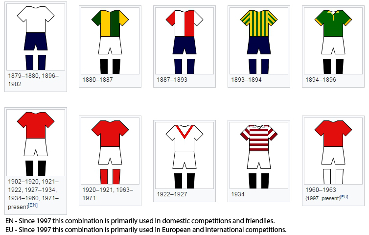